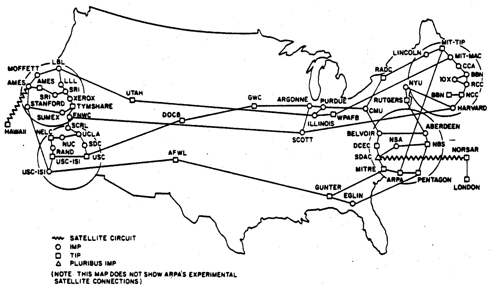
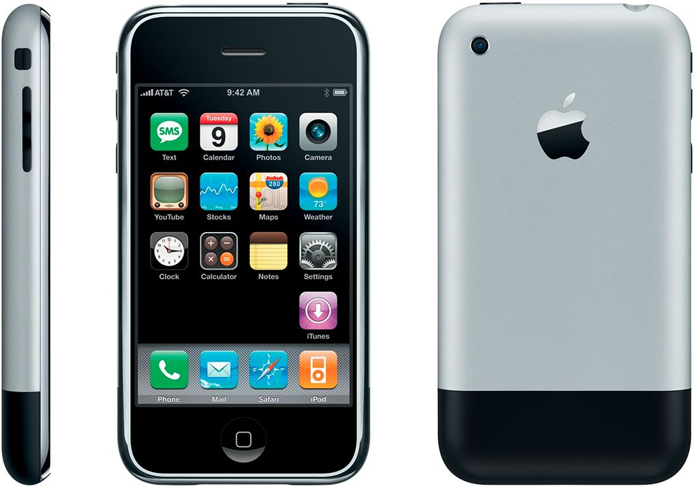

1969
ARPANET
In 1969 kwam door J.C.R. Licklider ARPANET in gebruik. Het Arpanet is een computernetwerk dat bestaat uit vier computers die met elkaar verbonden zijn. Wanneer twee het niet deden kwam de boodschap nog steeds aan bij de andere twee. Arpanet maakt gebruik (zoals het huidige internet) van packet-switching.
1989
World Wide Web

In 1989 bedacht Tim Berners-Lee de World Wide Web. Dit wordt ook wel het web genoemd. World Wide Web houdt in: 1. Een aantal technische afspraken, wereldwijd, voor het internet en verbinden documenten en computertoepassingen samen. 2. De verzameling documenten en toepassingen die wereldwijd volgens dit systeem over het internet worden aangeboden.
1991
HTML

HTML (HyperText Markup Language) is in 1991 bedacht en ontwikkeld door Tim Berners-Lee om wetenschappelijk documenten gemakkelijker toegankelijk te maken. Het is begonnen als een eenvoudige opmaaktaal voor tekst, met hyperlinks die URL’s bevatten.
1993
Grafische browser
De eerste grafische browser heette Mosaic. Het is geschreven door het Amerikaanse National Center for Supercomputing Applications (NCSA) Het werd in 1992 ontwikkeld en in 1993 uitgebracht. Mosaic was de eerste browser die afbeeldingen kon integreren in de tekst, in plaats van het te tonen in een apart venster.
1996
CSS

CSS (Cascading Style Sheets), stijlbladen, zijn een mogelijkheid om de vormgeving van webpagina’s te koppelen van hun feitelijke inhoud en centraal vast te leggen. Hakon Wium lie kwam in 1994 met het idee en in 1996 hebben Hakon en Bert Bos CCS1 ontwikkeld.
Javascript

Javascript is een universele programmeertaal dat in 1996 bedacht is door Brendan Eich. Het heeft eerst twee andere namen gehad voordat het javascript genoemd werd Mocha —> Livescript —> Javascript. Het wordt gebruikt om webpagina's interactief te maken en webapplicaties te ontwikkelen.
2007
iPhone
In 2007 kwam Steve Jobs met de eerste iPhone, de iPhone 2G. Het is een smartphone dat draait op het mobiele besturingssysteem iPhone OS. Er werd naar dit toestel verwezen als een model van de eerste generatie. Deze eerste generatie telefoon werd op 9 januari 2007 aangekondigd.
2010
Responsive webdesign

Responsive webdesign is in 2010 bedacht door Ethan Marcotte op de weblog A list Apart. Het ontwerp van een responsive website schaalt mee met de afmeting van een scherm, zonder in te leveren op leesbaarheid van tekst of bruikbaarheid van de gebruikersinterface.